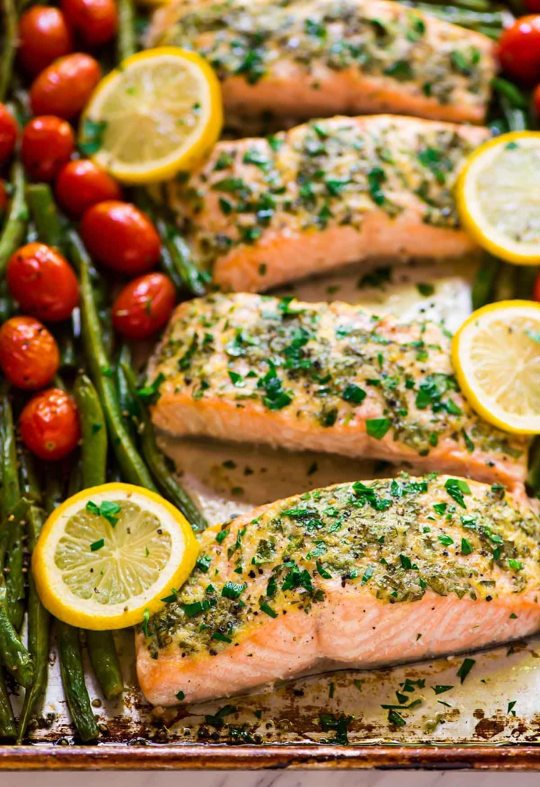

Cheesy Tomato Pasta
Ingredients:
- 1 box (16 oz) pasta (e.g., penne, farfalle)
- 1 (28 oz) can crushed tomatoes
- 1 cup shredded mozzarella cheese
- 1/2 cup grated Parmesan cheese
- 1/4 cup chopped fresh basil (optional)
- Salt and pepper to taste
Instructions:
- Cook pasta according to package directions.
- Meanwhile, in a saucepan, heat crushed tomatoes over medium heat.
- Season with salt and pepper to taste. Simmer for 10 minutes.
- Drain cooked pasta and return to the pot.
- Add tomato sauce, mozzarella cheese, and Parmesan cheese to the pasta.
- Toss to combine and heat until cheese is melted.
- Garnish with fresh basil (optional) and serve.
Easy Chicken Stir-Fry

Ingredients:
- ½ package of thin rice noodles, prepared according to package instructions
- 1 pound chicken breast
- 2-3 carrots, cut into thin strips
- 1 onion, cut in half and sliced thinly
- Salt, Sweet paprika, Sugar, Turmeric, Olive oil
- Salt and pepper to taste
Instructions:
- Slice the chicken breast into thin strips.
- Stir-fry the chicken in a wok.
- Add the carrots and onion.
- Season with olive oil and spices.
- Add the cooked noodles and continue to stir-fry for another 2 min.
- Serve immediately.
Vegetarian Chili
Ingredients:
- 2 tablespoons extra-virgin olive oil
- 1 medium red onion, chopped
- 1 large red bell pepper, chopped
- 2 medium carrots, chopped
- 2 ribs celery, chopped
- ½ teaspoon salt, divided
- 4 cloves garlic, pressed or minced
- 2 tablespoons chili powder*
- 2 teaspoons ground cumin
- 1 ½ teaspoons smoked paprika*
- 1 teaspoon dried oregano
- 1 large can (28 ounces) or 2 small cans (15 ounces each) diced tomatoes**, with their juices
- 2 cans (15 ounces each) black beans, rinsed and drained
- 1 can (15 ounces) pinto beans, rinsed and drained
- 2 cups vegetable broth or water
- 1 bay leaf
- 2 tablespoons chopped fresh cilantro, plus more for garnishing
- 1 to 2 teaspoons sherry vinegar or red wine vinegar or lime juice, to taste
- Garnishes: chopped cilantro, sliced avocado, tortilla chips, sour cream or crème fraîche, grated cheddar cheese, etc.
Instructions:
- In a large Dutch oven or heavy-bottomed pot over medium heat, warm the olive oil until shimmering. Add the chopped onion, bell pepper, carrot, celery and ¼ teaspoon of the salt. Stir to combine and cook, stirring occasionally, until the vegetables are tender and the onion is translucent, about 7 to 10 minutes.
- Add the garlic, chili powder, cumin, smoked paprika and oregano. Cook until fragrant while stirring constantly, about 1 minute.
- Add the diced tomatoes and their juices, the drained black beans and pinto beans, vegetable broth and bay leaf. Stir to combine and let the mixture come to a simmer. Continue cooking, stirring occasionally and reducing heat as necessary to maintain a gentle simmer, for 30 minutes.
- Remove the chili from the heat and discard the bay leaf. For the best texture and flavor, transfer 1 ½ cups of the chili to a blender, making sure to get some of the liquid portion. Securely fasten the lid and blend until smooth (watch out for hot steam), then pour the blended mixture back into the pot. (Or, you can blend the chili briefly with an immersion blender, or mash the chili with a potato masher until it reaches a thicker, more chili-like consistency.)
- Add the chopped cilantro, stir to combine, and then mix in the vinegar, to taste. Add salt to taste, too—I added ¼ teaspoon more at this point. Divide the mixture into individual bowls and serve with garnishes of your choice. This chili will keep well in the refrigerator for about 4 days or you can freeze it for longer-term storage.
One-Pan Lemon Garlic Salmon

Ingredients:
- 4 - 6 (6 oz or 170 g) salmon fillets, skin removed
- 2 tablespoons minced garlic
- 2 tablespoons fresh chopped parsley
- 1/3 cup freshly squeezed lemon juice
- Olive oil cooking spray
- 1 teaspoon Kosher salt (or sea salt flakes)
- 1/2 teaspoon cracked black pepper
- 4 bunches asparagus (24 spears), woody ends removed
- 1 lemon , sliced to garnish
- 1/3 cup beans/peas or any other greens
Instructions:
- Preheat oven broiler (or grill) to high heat. Line a baking sheet with aluminium foil. Arrange oven shelf to the second top shelf (about 8-inches from the heat element).
- Place the salmon on a large baking tray. Rub each fillet evenly with the garlic and parsley to evenly coat; pour over the lemon juice. Spray with a light coating of olive oil spray and season with salt and pepper. Arrange the asparagus and greens around the salmon in a single layer, and place the lemon slices over the top.
- Broil (or grill) for 8-10 minutes, or until salmon is cooked through to your liking (we find 8 minutes is perfect if the oven is hot).
- Serve with the asparagus and beans/peas.
Chocolate Chip Cookies

Ingredients:
- 1 cup butter, softened
- 1 cup white sugar
- 1 cup packed brown sugar
- 2 eggs
- 2 teaspoons vanilla extract
- 1 teaspoon baking soda
- 2 teaspoons hot water
- ½ teaspoon salt
- 3 cups all-purpose flour
- 2 cups semisweet chocolate chips
- 1 cup chopped walnuts
Instructions:
- Gather your ingredients, making sure your butter is softened, and your eggs are room temperature.
- Preheat the oven to 350 degrees F (175 degrees C).
- Beat butter, white sugar, and brown sugar with an electric mixer in a large bowl until smooth.
- Beat in eggs, one at a time, then stir in vanilla.
- Dissolve baking soda in hot water. Add to batter along with salt.
- Stir in flour, chocolate chips, and walnuts.
- Drop spoonfuls of dough 2 inches apart onto ungreased baking sheets.
- Bake in the preheated oven until edges are nicely browned, about 10 minutes.
- Cool on the baking sheets briefly before removing to a wire rack to cool completely.
- Store in an airtight container or serve immediately and enjoy!